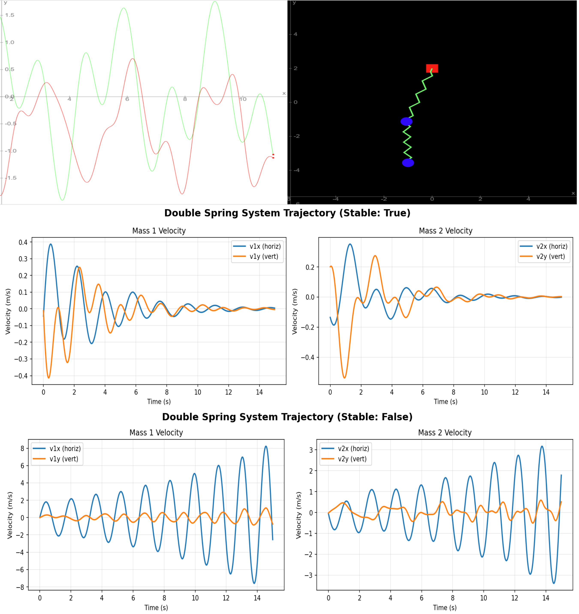
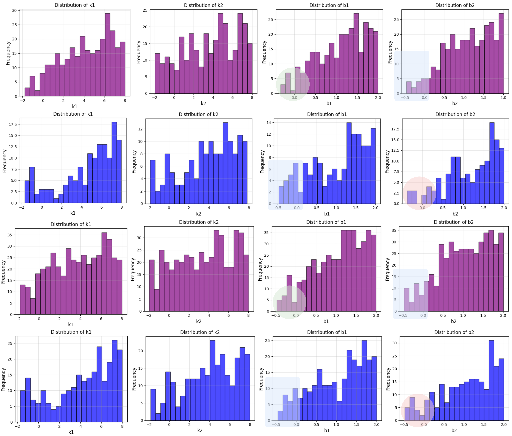

Final Project — CSE 598-002 - AI for Science • Fall 2025
Author: Daniel Menacho — dmenordo@umich.edu
we propose a stability-constrained inverse modeling framework that integrates neural surrogate models with Lyapunov-based stability constraints. Unlike existing approaches that either certify stability for given parameters (forward problem) or learn surrogates without stability guarantees, our method formulates parameter identification as an optimization problem where candidate solutions must simultaneously match desired outputs and satisfy learned Lyapunov conditions.
Our key contributions include:
Figure 1. The pipeline consists of two stages: (1) a pre-training stage, where the Lyapunov-based PINN learns stability characteristics and the Neural Surrogate Model captures the system dynamics, and (2) an inverse modeling stage that uses both pretrained components to compute the loss and identify admissible stable parameters.
The dataset contains 50,000 trajectories sampled every 0.1 seconds over a 15-second horizon, computed using SciPy’s Runge–Kutta ODE solver.
Figure 2. Simulator of Double 2D Spring from MyPhysicsLab and stable/unstable samples from our dataset.
Observing the frequency plot of the admissible parameters, we notice a tendency to avoid negative values, confirming that the model understands the physical meaning of the system and naturally excludes negative values when searching for stability.
Figure 4. Parameter distribution for reaching stable trajectories. The purple and blue experiments use the initial conditions [0.5, 1.0, -0.5, -4.0] and [0.25, 0.5, -0.2, -1.0], respectively. The first two rows correspond to the total optimization loss in the inverse model, while the remaining rows use only the data loss.